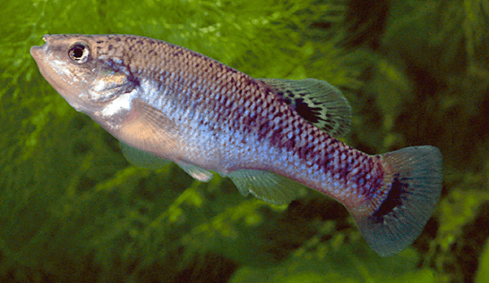

Systématique
- Ordre : Cyprinodontiformes
- Famille : Goodeidae
- Genre : Allodontichthys
- Espèce : A. tamazulae
- Auteur : Turner, 1946

Allodontichthys tamazulae est un petit poisson vivipare mexicain appartenant à la sous-famille des Goodeinae. C'est une espèce benthique (vivant près du fond) qui se distingue par un corps fuselé et une tête légèrement aplatie, adaptée à la vie dans les courants. Sa livrée est subtile : un fond beige à olivâtre marqué par une série de fines barres verticales ou de taches sombres le long des flancs, et souvent une tache sombre à la base de la nageoire caudale.
Les femelles atteignent environ 6 à 7 cm, tandis que les mâles sont un peu plus sveltes, mesurant généralement entre 5 et 6 cm. Contrairement à beaucoup de Goodeids qui nagent en pleine eau, les membres du genre Allodontichthys ont un comportement rappelant celui des darters (Etheostomatinae) ou des gobies, restant posés sur le substrat.
Cette espèce est inféodée aux zones de courant rapide des rivières. Elle est territoriale, surtout les mâles qui défendent vigoureusement des sites entre les pierres ou les anfractuosités du décor. En aquarium, il est essentiel de fournir un grand nombre de cachettes (galets, roches plates) pour que chaque individu puisse établir son territoire sans stress excessif.
Allodontichthys tamazulae est une espèce exigeante en ce qui concerne la qualité de l'eau. Elle nécessite une oxygénation très élevée et une eau exempte de polluants organiques. Son mode de vie "posé sur le fond" la rend particulièrement sensible aux infections cutanées si le substrat n'est pas parfaitement propre.
Mode : Vivipare matrotrophe.
Comme tous les Goodeinae, la fécondation est interne. La gestation dure environ 55 à 60 jours. Les embryons sont nourris par la mère via des structures placentaires appelées trophotaeniae. Les portées sont relativement petites, dépassant rarement 10 à 20 alevins, ce qui est typique des espèces de courants rapides.
Les jeunes naissent à une taille de 10-12 mm et sont très robustes. Ils cherchent immédiatement à se loger dans le courant entre les pierres. Les parents ignorent généralement les jeunes s'ils sont bien nourris et si le bac offre suffisamment de refuges naturels (mousses et interstices entre les roches).
Dimorphisme sexuel : Le mâle possède un andropode (nageoire anale modifiée avec les premiers rayons plus courts). Il est plus petit et présente souvent des nageoires légèrement plus développées et colorées lors des parades territoriales. La femelle est plus corpulente et possède une nageoire anale normale.
Espérance de vie : 3 à 5 ans. Un repos thermique hivernal est bénéfique pour leur métabolisme.
Endémique du bassin du Rio Coahuayana, spécifiquement dans le système du Rio Tuxpan (ou Tamazula) dans les États de Jalisco et Colima, au Mexique. Elle fréquente les rapides (riffles) des cours d'eau de montagne, là où l'eau est la plus agitée et oxygénée.
Le fond est tapissé de gros galets, de roches et de gravier, sans quasiment aucune végétation aquatique supérieure. L'espèce est menacée par la pollution issue de l'industrie sucrière très présente dans la région, ainsi que par les rejets agricoles et urbains qui modifient la chimie de l'eau et réduisent le taux d'oxygène dissous.
Répartition

Origine naturelle :
- Mexique : Bassin du Rio Coahuayana (Rio Tuxpan/Tamazula), États de Jalisco et Colima.
- Localité type : Rio Tamazula, Jalisco, Mexique.
Statut UICN : En danger (Endangered). Son aire de répartition est restreinte et ses populations sont fragmentées par la dégradation de la qualité des rivières.
Paramètres de maintenance
Température : 18 à 24 °C (Une bonne oxygénation est vitale au-delà de 22 °C).
pH : 7,0 à 8,0.
GH : 10 à 20 °dGH.
Courant : Très fort (pompe de brassage indispensable).
Volume conseillé : Minimum 80-100 L avec une grande surface de fond.
Régime alimentaire
Régime : Carnivore spécialisé (insectivore benthique).
Dans la nature, il se nourrit principalement de larves d'insectes aquatiques trouvées sous les pierres. En aquarium, il préfère nettement les proies vivantes ou congelées (vers de vase, daphnies, artémias). Il peut être difficile à habituer aux nourritures sèches, qui ne doivent être qu'un complément. Il est important que la nourriture tombe sur le fond pour qu'il s'en saisisse.